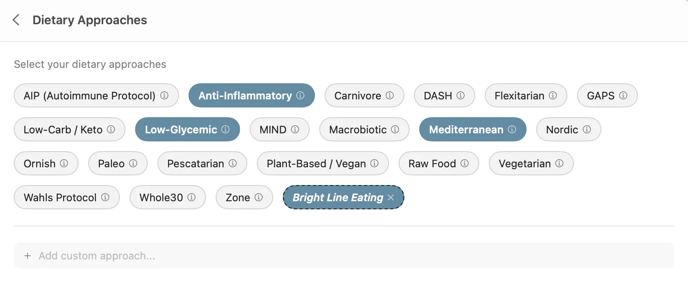
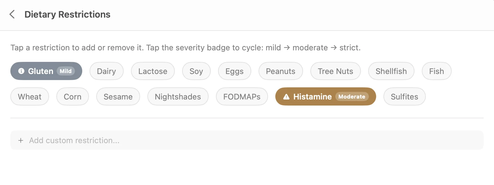
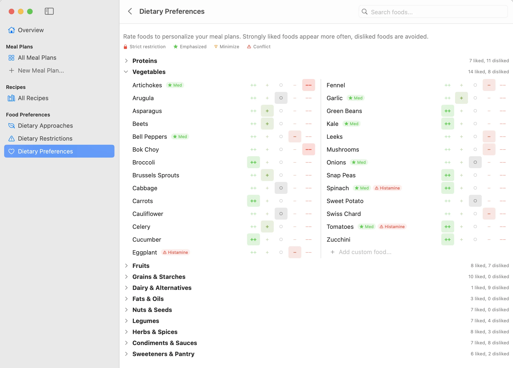
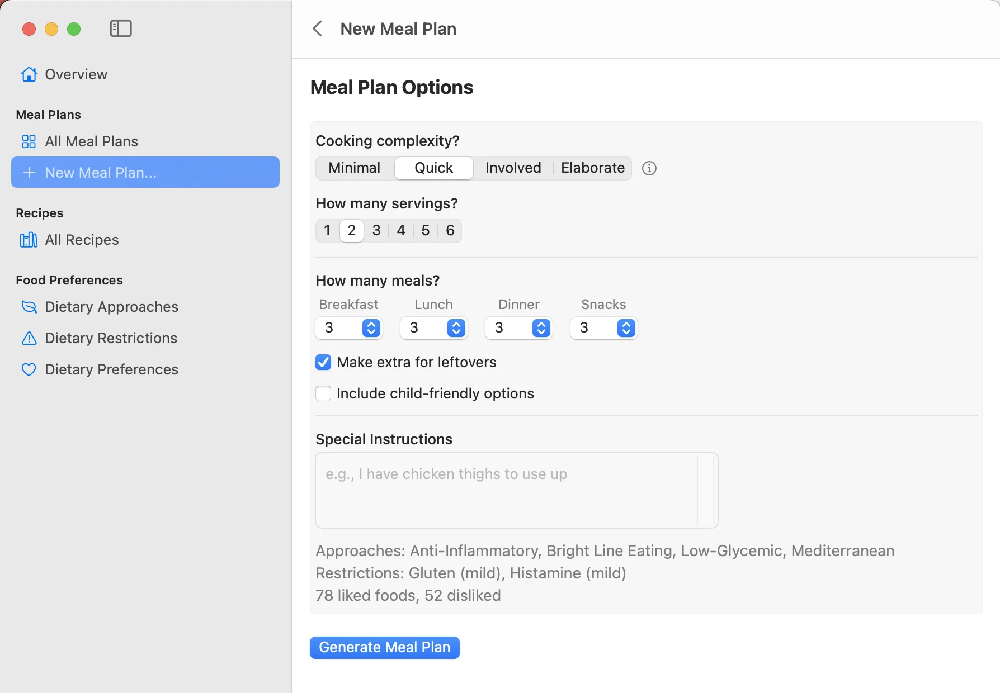
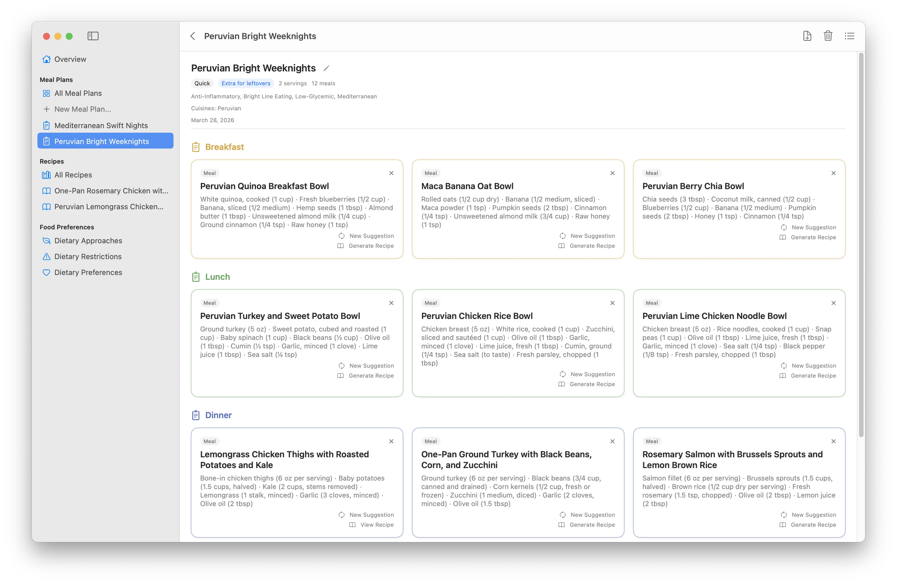
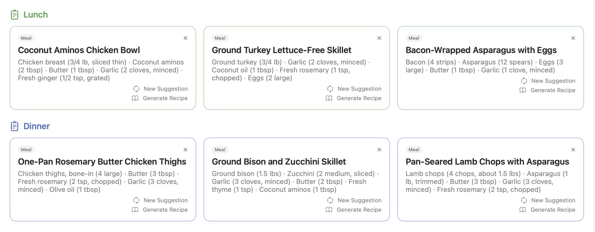
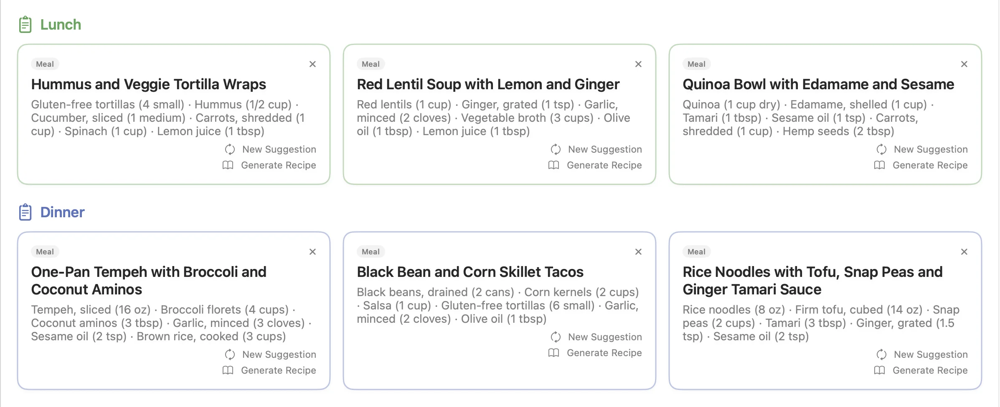
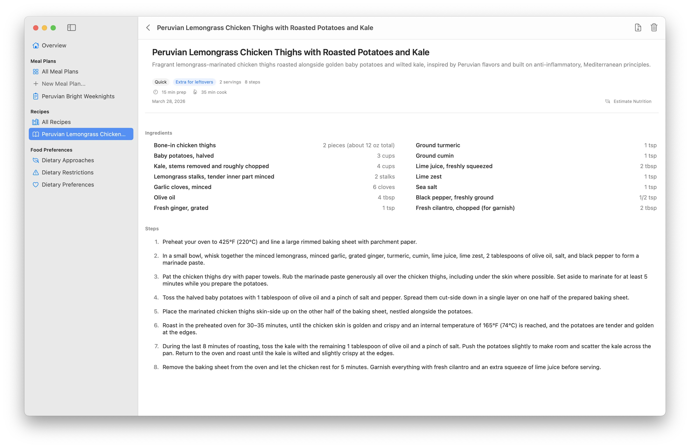
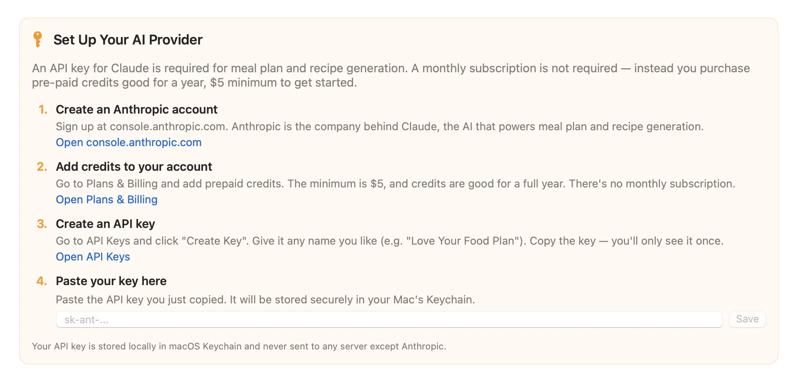

Meal planning that
starts with what you love
AI-powered meal plans built around your dietary approaches, restrictions, and personal preferences.
Old-school macOS app. No login. No cloud.
Download for MacLove your food plan!
When you want to change your food plan, starting with recipes isn't helpful. They're too detailed, you have to sift through a million ingredients to check for restrictions, and recipe websites are notoriously cluttered, difficult to use, and filled with ads.
Instead, start with what you like and what you need to avoid, and use AI to generate meal plans for you — maybe you want to make leftovers, maybe you need some child-friendly options — and when you see meals you like, you can generate recipes.
If you've ever struggled to change your food plan and always keep reverting to the same old things you're already familiar bored with, it's exciting to see breakfasts, lunches, dinners, and snacks that sound like you'd love them!
Start with your big-picture dietary approach
Just click the ones you want to use. Click the info button to get a description — maybe you'll want to try a new approach. Add custom approaches, the AI will figure it out.


Set your dietary restrictions
Click the ones that apply to you or your family. Set each to Mild, Moderate, or Strict and the meal selections will match. Custom restrictions welcome.
Set your detailed food preferences
In five minutes you can design a set of preferences that guarantee you'll like the meals suggested. Click once for each food — from Strong Like to Strong Dislike.


Generate a meal plan
Set cooking complexity from minimal assembly to elaborate weekend cooking. Choose how many breakfasts, lunches, dinners, and snacks. Add leftovers, child-friendly options, or special instructions.
Click Generate and wait ten seconds.
Look at all these awesome meals!
If one doesn't appeal, click "New Suggestion" and Claude will make another, avoiding ingredients already used in surrounding meals. Use it as a weekly plan or just a reference for new ideas.

Committed carnivore? We've got you.

Fully vegan? Every meal fits.

Generate recipes
Click "Generate Recipe" and get a detailed recipe with ingredients, cooking steps, and NO CLUTTER. Recipes are editable, so you can tweak them to your taste.
Prints great too — both recipes and meal plans have excellent PDF export. Click the download icon in the upper right corner.

Download for Mac
Completely free. No demo mode, no ads.
Download for Mac v0.2.4Requires macOS 15 Sequoia or later
Get your own AI for food plans
You'll need to connect the app to Claude (the AI). It's simple — we step you through it. You create an account with Anthropic, the company behind Claude, and purchase a minimum of $5 in credits. No subscription, and credits last for a year.
We track the costs in the app for you — a typical meal plan costs a few cents, a recipe is usually a penny or two. $5 will go a long way. (You pay Anthropic directly — we never see your data or take a cut.)
